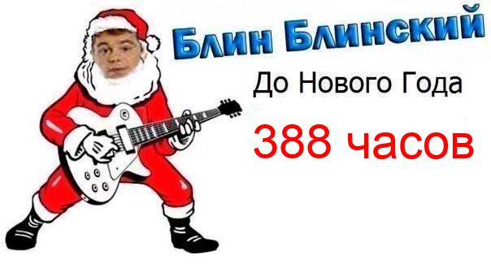

from PIL import Image, ImageDraw, ImageFont
import datetime
def current_day():
return datetime.datetime.now().day
def current_time():
return datetime.datetime.now().hour
def to_new_year():
return (31 - current_day()) * 24 + (24 - current_time()) - 3
image = Image.open('kuz.jpeg')
draw = ImageDraw.Draw(image)
font = ImageFont.truetype('arial.ttf', 60)
text = str(to_new_year())
if text[-1] == '1' and text[-2] != '1':
text = text + ' час'
elif (text[-1] == '2' or text[-1] == '3' or text[-1] == '4') and text[-2] != '1':
text = text + ' часа'
else:
text = text + ' часов'
draw.text((310, 140), text, (255, 0 , 0), font = font)
image.save('kuztime.jpeg')
